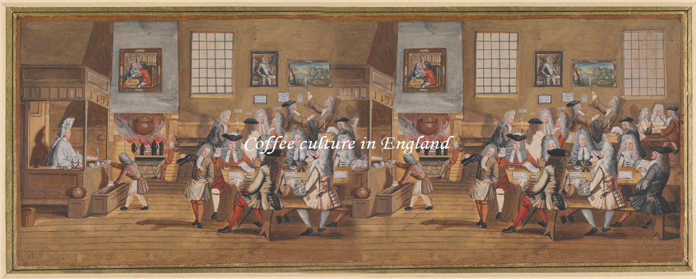
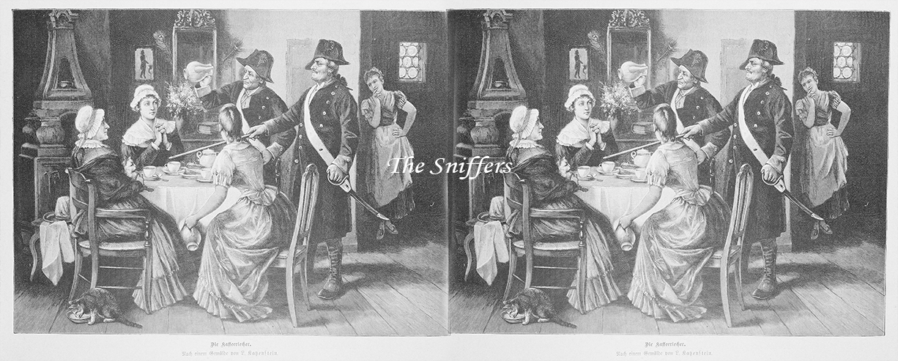
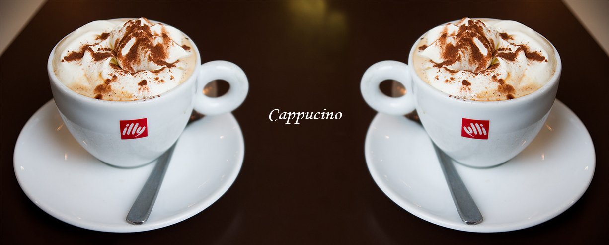
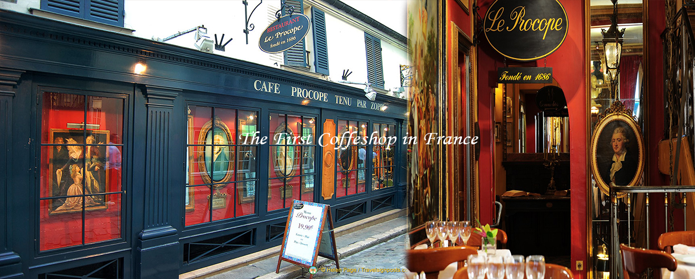
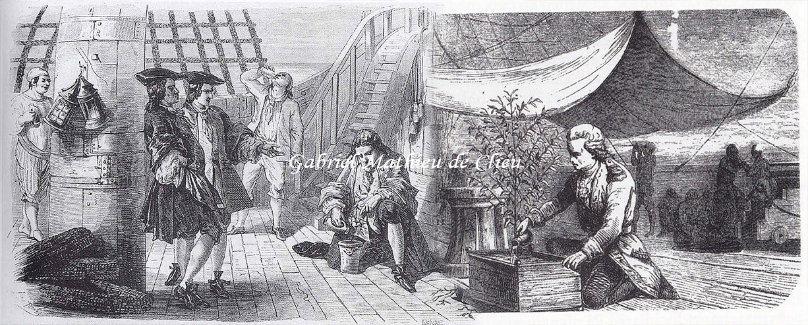

🌿 The Coffee culture in Europe: a bittersweet history ☕
The British Cafe 😺
Since coffe and tea hadn't reached Europe yet and the drinking water was sometimes unsafe , beer was Europe's favorite beverage. A professor of Medicine in 1551 stated "People subsist more on this drink than they do on food". On average every man, woman, and child in England drank over 350 litres of beer per year up to the 17 century while Germans were putting away 400-600 litres. Europe wobbled about under this depressive and confusing alcoholic haze. Until Dutch, Venetians, and Italian merchants began importing coffee in the 17th century and a new, stimulating social space opened up. Oddly enough it was firstly in England that cafe culture captivated Europeans.
According to Leonhard Rauwolf's 1583 account, coffee became available in England no later than the 16th century, largely through the efforts of the Levant Company. The first coffeehouse in England was opened in St. Michael's Alley in Cornhill, London. The proprietor was Pasqua Rosée, the servant of Daniel Edwards, a trader in Turkish goods. Edwards imported the coffee and assisted Rosée in setting up the establishment. Coffee was also brought in through the British East India Company and the Dutch East India Company in the 17th century. Oxford's Queen's Lane Coffee House, established in 1654, is still in existence today. By 1675, there were more than 3,000 coffeehouses throughout England, called Penny Universities , because for the price of a cup of coffee you could sit and listen to the country's most intelligent people chat. but there were many disruptions in the progressive movement of coffeehouses between the 1660s and 1670s. During the enlightenment, these early English coffee houses became gathering places used for deep religious and political discussions among the populace.

British Coffee History 🍃
In a uniquely egalitarian model of sociability, men gathered around a long table at most coffeehouses to talk business, but also to discuss news, politics and ideas. The explosion of coffeehouses across London coincided with the build-up to the early Enlightenment period, and coffeehouses played a key role in that. Which was why King Charles II tried to ban them in 1675, before being forced to back down. English cafes fortered early capitalism. Some of the world's largest businesses like Llyod's of London, The East India Company , and the London Stock Exchange , began as cafes. Not everyone loved coffee though. Especially women , who were excluded from cafes. In 1674 they complained: "we find of late a very sensible Decay of that true old English vigor; our Gallants being every way so frenchified... We can Attribute to nothing more than the Excessive use of that newfangled , abominable , heathenish liquor called coffee , which has so eunucht our husbands...and spend their money, all for a little base, black, thick, nasty, bitter, stinking, nauseous puddle-water....we humble pray, that henceforth the drinking coffee may on severe penalties be forbidden and that instead therefore. Lusty nappy beer and cock-ale.....be reccomended to general use".
Prussia Coffee History 💥
Frederick's father, Frederick William I of Prussia, had declared coffee as well as chocolate, tea, sparkling wine and fruit ice cream to be luxury goods. This led to coffee becoming a common commodity with all swaths of the population, since offering coffee was seen as something special; by the mid-18th century, most Prussians regularly drank coffee. When, after the Seven Years' War, Prussia's treasury was empty, Frederick II raised the luxury tax on coffee to 150% of the sale price; a spinstress now had to work a full day to afford a cup of coffee. Frederick justified the taxes by saying that people could instead drink beer which he deemed healthier than coffee and which would support the local breweries while coffee led to money leaving the country. Frederick initially sought to ban coffee altogether in favour of chicory, a substitute that was produced domestically, but after realizing the futility of such a ban, the government instead in 1781 decided to monopolize coffee roasting. Frederick decreed that only state-owned roasting plants were allowed to roast coffee. Exceptions were made for nobility, soldiers in command positions, the clergy, industrialists and other privileged citizens. This led to merchants with concessions selling coffee for inflated prices.
While some commoners turned to cheaper coffee substitutes made from wheat, corn, chicory or dried figs, many turned to smuggling of coffee beans, which were near undetectable before roasting. This led to workers even abandoning their old jobs in order to profit from smuggling. Frederick decided to employ 400 former soldiers, invalids of the Seven Years' War, as coffee sniffers to detect smuggled coffee being roasted or consumed. Citizens who were found to be in possession of illegal coffee had to pay large fines. Coffee sniffers wore military uniforms and conducted searches on people and houses. They were detested by the populace but well paid and received premiums for each smuggler they caught (a quarter of the fine was paid to the coffee sniffers). The ire caused by the coffee sniffers lasted well into the first quarter of the 19th century. The only officials hated more than coffee sniffers were wig sniffers (Perückenschnüffler) whose job it was to make sure people were wearing licensed wigs. After the death of Frederick, the state's monopoly on coffee was abolished in 1787, leading to the dissolution of the coffee sniffers.
The Cappucino is here 🌼
Cappuccinos first popped up as the 'Kapuziner' in Viennese coffee houses in the 1700s. A description of the 'Kapuziner' from 1805 described it as "coffee with cream and sugar," and a description of the drink from 1850 adds "spices" to the recipe. Either way, these drinks had a brown color similar to the robes worn by the Capuchin ('Kapuzin') friars in Vienna, and this is where their name came from. (A similar drink of the time was known as the 'Franziskaner'; it was made with more milk and named after the lighter-brown robes of the Franciscan monks.) The word 'Capuchin' literally means cowl or hood in Italian, and it was a name given to the Capuchin monks for their hooded robes.
Although the name 'Kapuziner' was used in Vienna, the actual cappuccino was invented in Italy, and the name was adapted to become 'Cappuccino.' It was first made in the early 1900a, shortly after the popularization of the espresso machine in 1901. The first record of the cappuccino we have found was in the 1930s. 'Cappuccini' (as they are known in Italy) gradually became popular in cafes and restaurants across the country. At this time, espresso machines were complicated and bulky, so they were limited to specialized cafes and were operated solely by baristi. Italian coffee culture involved sitting around in these specialized cafes for hours, enjoying espresso, cappuccinos, cafe lattes, and other drinks over conversation and reading. Photos from the era indicate that cappuccinos were served in the "Viennese" style, which is to say that they were topped with whipped cream and cinnamon or chocolate shavings.
Coffee in France 🍒
By the early 17th century, coffee was introduced to Europe through Venetian merchants. It was met with strong resistance from the Catholic church. However, when Pope Clement VIII was asked to declare the “black, sooty beverage” the invention of Satan, he replied, “Let me taste it first.” He did and proclaimed “This devil’s drink is so delicious we should cheat the devil by baptizing it!” After his pronouncement coffee spread through Europe like lightning. Venice’s first coffee house opened in 1645. England’s in 1650. And France’s in 1671, although coffee arrived in the port of Marseille in 1644.
Paris loves Coffee 🌞
Two years later, in 1671, an Armenian whom everyone called Pascal, opened a coffee-drinking booth at the fair of St. Germain. He offered the beverage for sale from a tent, supplemented by the service of Turkish waiter boys, who peddled it among the crowds from small cups on trays. The fair was held during the first two months of spring. It took place on a large open plot just inside the walls of Paris and near the Latin Quarter. As Pascal’s waiter boys circulated through the crowds on those chilly days the fragrant odor of freshly made coffee encouraged many sales of the steaming beverage. Soon visitors to the fair learned to look for the “little black” cupful of cheer, or petit noir, a name that still endures. This marked the beginning of Parisian coffee houses.
In 1686, the Café de Procope was opened by Sicilian chef Francesco Procopio dei Coltelli. He had come to Paris from Italy acquiring a royal license to sell spices, ices, barley water and lemonade. As a keen business man he added coffee to the list and soon attracted a large and rather distinguished clientele: noted French actors, authors, dramatists and musicians. With the opening of the Café de Procope, coffee became firmly established in Paris. The first merchant licensed to sell coffee in Paris was François Damame, who secured the privilege through an edict of 1692. He was given the sole right for 10 years to sell coffee in all the provinces and towns of the kingdom, and in all territories under the sovereignty of the king. Every city in France soon had its coffee houses.
The drink of Kings 👑
Louis XIV (1638-1715) grew his own coffee beans in greenhouses on the Versailles Palace grounds. He handpicked the beans, roasted them, and ground them himself. He loved to serve his own coffee to guests of the Palace. In 1714, he received a present from the Dutch, a coffee tree for Paris’s Royal Botanical Garden, the Jardin des Plantes. The Dutch had successfully grown the coffee tree on the island of Java. This inspired the king to consider Martinique for growing coffee. He gave a clipping to a young naval officer, Gabriel Mathieu de Clieu who sailed for Martinique. Pirates nearly captured the ship and a storm nearly sank it. Drought followed, water grew scarce and was rationed, but de Clieu gave half of his allotment of drinking water to his stricken cutting. Under armed guard, the cutting was planted and grew strong. In the next 50 years it yielded a whopping 18 million trees.
Voltaire (1694-1778), a French writer and public activist, allegedly drank between 40 and 50 cups a day which he mixed with chocolate. He credited coffee for the inspiration and stimulation behind the development of his philosophies. He paid hefty bonuses to his servants who could find his favourite coffee beans.
During the reign of Louis XV (1715-1774) there were 600 cafés in Paris. At the close of the 18th century there were more than 800. With the invention of the first percolation system coffee maker, “La Débelloire,” by Jean-Baptiste de Belloy, Archbishop of Paris (1802-1808), the number of cafés increased to more than 3000
Napoleon Bonaparte had a passion for coffee reportedly drinking up to 50 cups per day. It’s said he claimed “I would rather suffer with coffee than be senseless.”